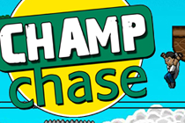

Phil Groman | Portfolio
Phil Groman | Portfolio
Contact
Biography
PowerClip : Emergency Energy
Compact unit to charge appliances from a car battery during disaster relief
Rehuddle : Web Conferencing
The web's fastest, simplest and most cheerful conference calling service
Guinness World Record
Multi-player game for live audiences using smartphones as game controller
Interactive Window Display
A shop window installation allowing passers-by to interact through glass
Interactive Parallax Screen
A display that changes perspective depending on the viewer's postion
Parading Data : A Visualization
Visualization built with Processing to display data as an animated parade
BldgTalk : Your home online
Community portal enabling residents to coordinate around issues of concern
The Myth of Pyramis
Stop-motion animation shortlisted for the Lower East Side Film Festival
Manhattleship : A game mashup
Teams race across a Manhattan grid to locate the coordinates of enemy ships
StreetEyes : Mobile App
Connecting users with real-time data based on the location of other users
La Serviette : A Short Film
Short film about a napkin and a chance encounter inspired by Jean-Luc Godard
Motrepreneur
A scheduled phone call education system built with Ruby and Asterisk
SMS Child Crisis Line
A nationwide SMS line in South Africa connecting senders with social services
Moraba : Mobile Gender Game
A mobile game designed to educate young people about gender issues
Champ Chase : Mobile Game
A game designed for a child protection campaign in South Africa

Voteclash : Interactive Debating
A live debate format using SMS voting to engage the audience
International Arabic Fiction Prize
Coordination of the launch of the Arabic Booker Prize
Shakespeare in the Balkans
A theater project addressing ethnic tensions in Bosinia
Beach Break Live Festival
Early branding and operations for the UK's largest student music festival
Mongolia Charity Rally
Published photos and writing covering a journey from London to Mongolia
{kind=link}
{kind=link}
{kind=link}
{kind=link}
{kind=link}
{kind=link}
{kind=link}
{kind=link}
{kind=link}
{kind=link}
{kind=link}
{kind=link}
{kind=link}
{kind=link}
{kind=link}
{kind=link}
{kind=link}
{kind=link}
{kind=link}
{kind=link}
{kind=link}
{kind=link}
{kind=link}
{kind=link}
{kind=link}
{kind=link}
{kind=link}
{kind=link}
{kind=link}
{kind=link}
{kind=link}
{kind=link}
{kind=link}
{kind=link}